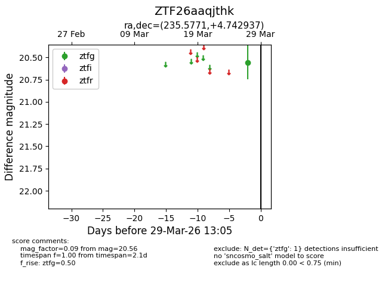
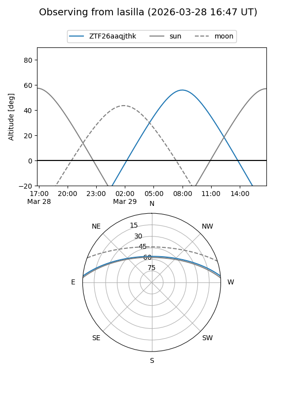
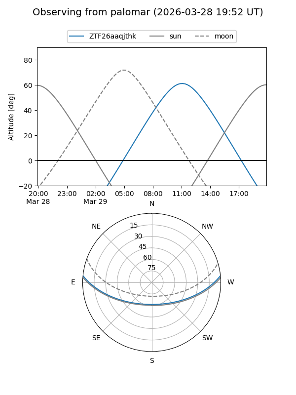

ZTF26aaqjthk
Target ZTF26aaqjthk at 2026-03-29 13:09
Aliases and brokers:
FINK: link
Lasair: link
ALeRCE: link
alt names
ZTF26aaqjthk (ztf,fink_ztf)
Coordinates:
equatorial (ra, dec) = 235.5771,+4.74294
equatorial (HMS+DMS) = 15:42:18.51,+04:44:34.57
galactic (l, b) = (11.8757,+43.57817)
Flags:
Photometry:
last ztfg=20.56
1 ztfg detections
Lightcurve

Visibility


Additional plots